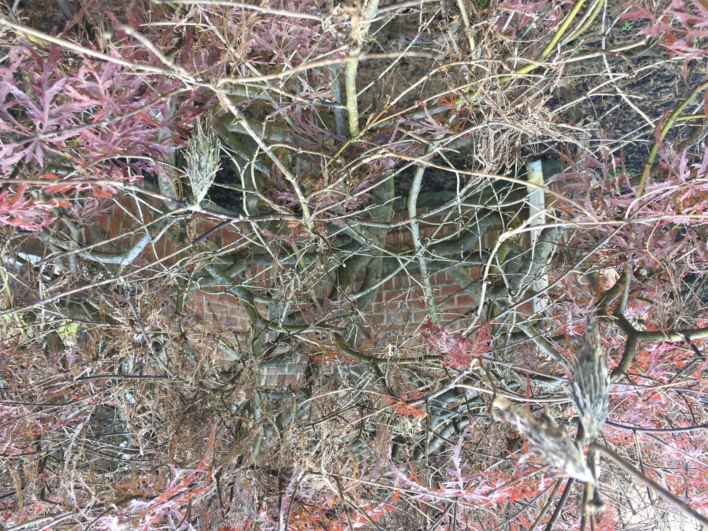
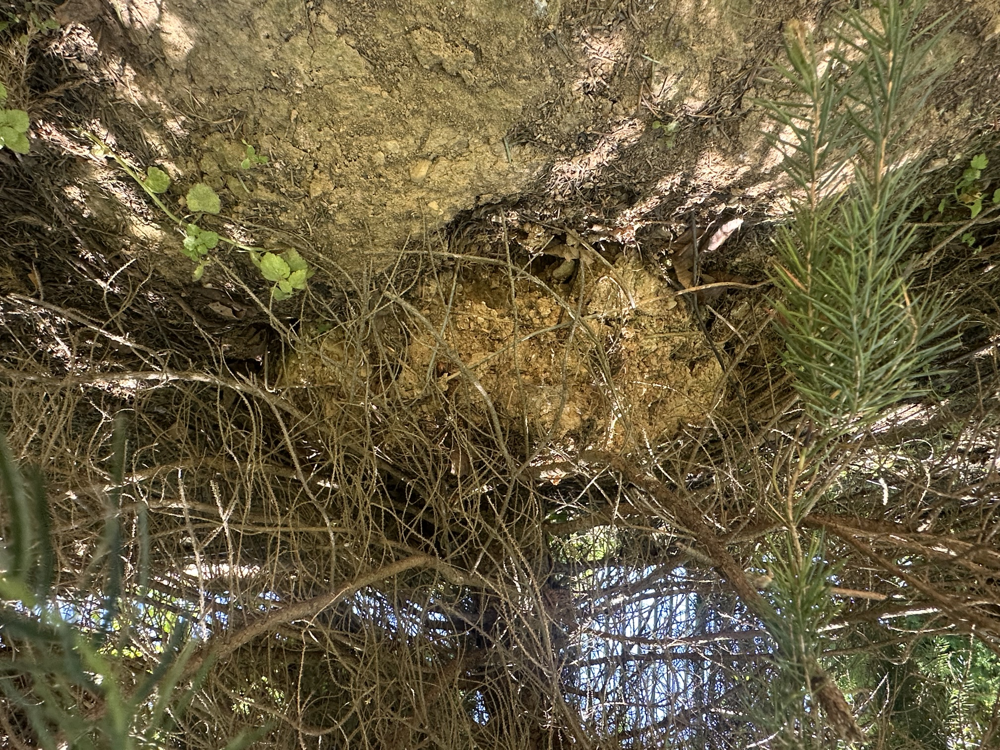
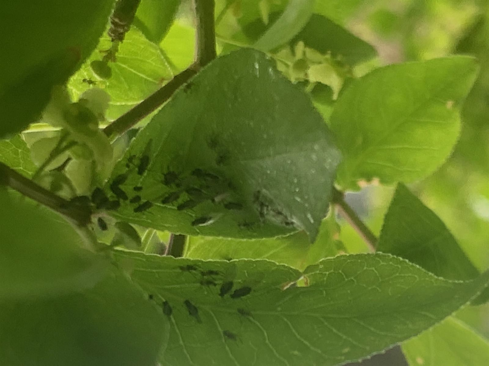
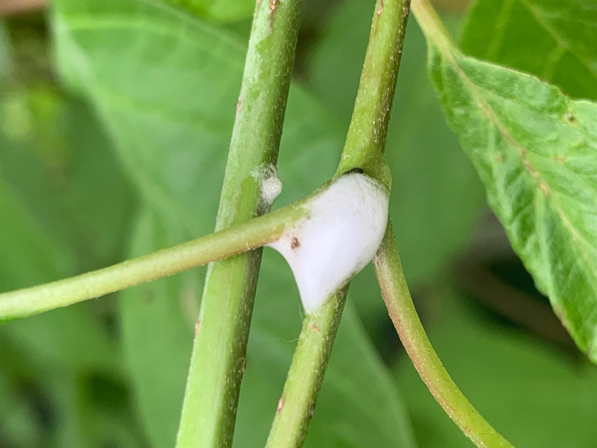
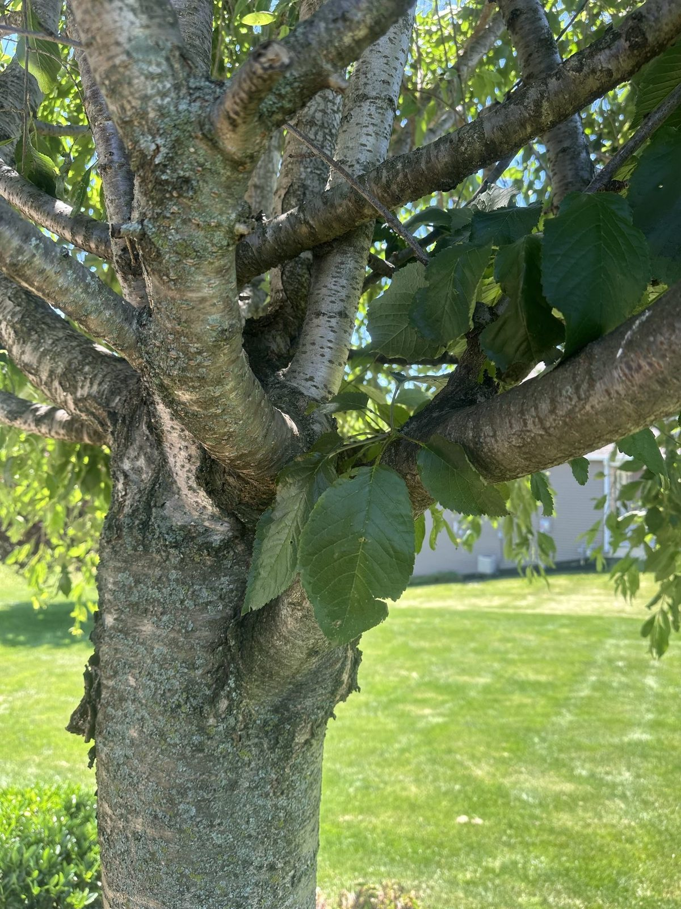

You planted those trees. Maybe you paid a lot for them, or maybe they came with the house and you've watched them for twenty years. Now something's wrong and the first question is the one that keeps you up: am I going to lose it?
Usually the answer is no. Start with whatever you can actually see — brown needles, spotted leaves, something chewing — and work backward from there. We'll also tell you the part most companies won't: when it's nothing, when it's already too late, and when the problem isn't something a spray can fix at all.
Free Photo Diagnosis — Text 717-379-3248This is our most common call, and the most misdiagnosed. Six different problems turn a spruce or arborvitae brown, and they look nearly identical from your driveway — but two of them are treatable, two will grow out on their own, and two mean no amount of spraying will help. Finding out which one you have is the entire ballgame.

Classic on Colorado blue spruce: browning and purpling starts on inner, lower branches and works outward and upward over years. Infected needles drop, leaving bare interior branches. Fungal, and treatable — but timing matters, and recovery takes multiple seasons because spruce won't regrow needles on bare wood.

Needles look dull, stippled, or bronzed rather than cleanly brown, often with fine webbing at the base. Worst in hot, dry stretches. Hold white paper under a branch and tap — moving specks confirm it. Frequently misdiagnosed as disease and sprayed with fungicide, which does nothing.

Those "pine cones" hanging off your arborvitae or spruce are caterpillar cases, and each one holds hundreds of eggs. They can strip and kill an arborvitae in a season or two. Timing is everything — treatment works on young larvae in early summer and is nearly useless once the bags seal in late summer.

Planted too deep, girdling roots, wire baskets left on, soil piled against the trunk, compaction, or drought stress. The tree browns from general decline rather than in a disease pattern. No spray fixes this — and this is why we diagnose before we quote.
Browning on the windward or sun-exposed side, appearing in late winter or early spring on arborvitae, boxwood, holly, and rhododendron. The plant lost moisture it couldn't replace from frozen ground. Cosmetic damage that often grows out — worth waiting before anyone treats anything.
Not a disease at all: clean-stripped lower branches with a distinct browse line, worst on arborvitae and yews in winter. Ragged torn ends rather than clean cuts, since deer have no upper front teeth. See deer damage repair & prevention.
Good news first: most leaf spots look far worse than they are. A big established shade tree can drop every leaf to disease and leaf out fine next spring. What actually matters is whether it happens year after year, and whether it's one of the few that spreads fast — fire blight can take a pear tree in a season.
Irregular brown or tan blotches, often following leaf veins, with distorted growth and early leaf drop. Common on sycamore, dogwood, maple, and ash after wet springs. Usually more disfiguring than dangerous on established trees, though repeat years wear a tree down.
Olive-green to black velvety spots on crabapple and apple leaves, then yellowing and heavy summer defoliation. A crabapple that's bare by August almost always has scab. Treated preventively in spring — once the spots show, that season is decided.
White to gray powdery coating on leaf surfaces — lilac, dogwood, monarda, peony, ninebark. Thrives in humidity with poor air movement. Rarely fatal, very visible, and often improved as much by pruning for airflow as by product.
Defined circular spots (leaf spot) or orange-to-rusty pustules on leaf undersides (rust — cedar-apple rust cycles between junipers and apples/crabapples here). Diagnosis matters: the two look similar from ten feet and are managed differently.
Branch tips that look scorched, with leaves and blossoms turning black and shoots bending into a shepherd's crook. Bacterial, fast, and serious on pear, apple, crabapple, and quince. Pruning technique and timing matter enormously — cutting wrong spreads it.
Leaves yellow while veins stay green — usually a nutrient availability problem driven by soil pH rather than a disease. Common on pin oak, river birch, and azalea in our limestone-influenced soils. Fixed at the root zone, not with a fungicide.
Watching something eat a plant you paid for is maddening, but hold on before you spray. A healthy tree shrugs off losing a share of its leaves in one season — that's normal, and the birds are usually handling it. The ones worth acting on are the pests that come back with reinforcements or kill outright, like bagworms on an arborvitae hedge.

Caterpillar-lookalikes feeding shoulder-to-shoulder in groups, stripping pine, spruce, and roses fast. They're not caterpillars (they're wasp relatives), which matters: Bt — the go-to organic caterpillar product — does nothing to them.
Leaves reduced to lace with the veins left behind, on roses, lindens, cherries, and birch every July. The adults you're swatting are the second act — the first was grubs in your lawn. See our Japanese beetle guide.
Listed under evergreens above because that's where they do the most damage in Central PA, but they'll also work deciduous trees. Look for the hanging cases before you look for the caterpillar.
Chewed margins, rolled or tied leaves, webbing at branch tips. Most are cosmetic on a healthy tree and genuinely don't need treatment — we'll tell you when that's the case rather than sell you a spray.
Whole shoots gone rather than leaf damage. Rabbits cut cleanly at a 45-degree angle low to the ground; deer tear raggedly and reach higher. See deer damage.
This is the category where people call because their car, patio table, or dog got sticky. The sticky stuff is honeydew — insect waste raining down from something feeding above you. Annoying, mostly fixable, and important to identify correctly, because the wrong product here can genuinely make mites worse.

Clusters of soft-bodied insects on new growth and leaf undersides, curled tips, and sticky "honeydew" coating everything below — including your car and patio furniture. Ants farming your shrubs is a strong tell.
Immobile bumps on stems and leaf undersides that look more like part of the plant than an insect. Heavy infestations cause yellowing, dieback, and honeydew. Timing treatment to the mobile "crawler" stage is the whole game — armored scale ignores products applied at the wrong moment.
Black soot-like film on leaves and branches. It isn't attacking the plant — it's growing on the honeydew dripping from aphids or scale above it. Treat the insect and the mold weathers away. Fungicide is the wrong answer.
Fine stippling, dull bronze cast, and delicate webbing in branch crotches. Explode in hot dry weather — and some broad-spectrum insecticides make them worse by killing the predatory mites that were controlling them.
Stippled, silvery-gray upper leaf surfaces with dark varnish-like specks underneath. Azalea, rhododendron, andromeda, and sycamore. Damage looks like mites from above — flip the leaf and the specks give it away.

Foamy white "spit" masses on stems in early summer, with a nymph hidden inside. Alarming to find, almost always harmless. A hose usually settles it — no treatment warranted.
This is the serious category. When whole limbs die back or a tree declines year over year, the clock is real and some of these have no cure. It's also where you most want an honest opinion before spending money — we would rather tell you a tree is finished than sell you three years of treatments on it.
Small round or D-shaped exit holes, sawdust-like frass, sap bleeding, and branches dying from the top down. Emerald ash borer has effectively ended untreated ash in our area. Borers usually target already-stressed trees — which means the borer is often the symptom, not the disease.
Sunken, discolored, sometimes oozing areas on branches or trunk, with everything beyond the canker dying. Cytospora canker on spruce is extremely common in Central PA landscapes. No spray cures canker — management is pruning, and correcting the stress that let it in.
One side or one limb wilts and browns while the rest looks fine; cut wood shows dark streaking. Soil-borne, and it hits maple, redbud, catalpa, and smoke bush. There's no cure — knowing that saves you from paying for treatments that can't work, and changes what you replant.

Vigorous shoots from below the graft on flowering cherries, crabapples, and roses — different leaves, different growth rate, and they'll take over the tree if left. Not a disease; a pruning issue with a deadline. See the full explanation.
A trunk that enters the soil like a telephone pole with no visible root flare is strangling itself. Causes slow, unexplained decline over years and gets misdiagnosed as everything else. Correctable when caught early enough.
Torn limbs, split crotches, string-trimmer wounds at the base, and lightning strikes — all entry points for canker and borers. See our guide to storm-damaged trees and shrubs.
Central PA got handed a few problems the rest of the country doesn't deal with the same way. If you have ash trees or you're inside the lanternfly zone, these are worth understanding before they force the decision for you.

Mass clustering on trunks, heavy honeydew and sooty mold, and gray putty-like egg masses on any hard surface over winter. Central PA is the epicenter. See lanternfly treatment.
Thinning canopy from the top down, D-shaped exit holes, and heavy woodpecker activity stripping bark. Untreated ash trees in our region are effectively lost — and standing dead ash becomes a genuine hazard near houses and driveways.
Boxwood blight, leafminer, and psyllid all hit the same plant differently. Blight in particular spreads on tools and clothing, so identification before anyone starts pruning genuinely matters.
Brown patches in turf are their own diagnostic category — grubs, drought dormancy, fungal disease, or urine spots. Start with grub damage and dead vs. dormant, or see lawn care.
We serve Dauphin, Cumberland, Lebanon, Perry, York, and Lancaster Counties — including:
Harrisburg, Paxtang, Penbrook, Steelton, Highspire, Middletown, Hummelstown, Hershey, Palmyra, Annville, Cleona, Lebanon, Grantville, Linglestown, Colonial Park, Susquehanna Township, Lower Paxton, Camp Hill, Mechanicsburg, Lemoyne, New Cumberland, Wormleysburg, Enola, Marysville, Halifax, Millersburg, Elizabethtown, Mount Joy, Mount Wolf, Manchester, Dillsburg, Carlisle, Boiling Springs, and surrounding Central PA communities.
Text a photo to 717-379-3248 for a free diagnosis. Licensed PA applicator since 2005, serving Harrisburg and Central PA.
Call or Text 717-379-3248